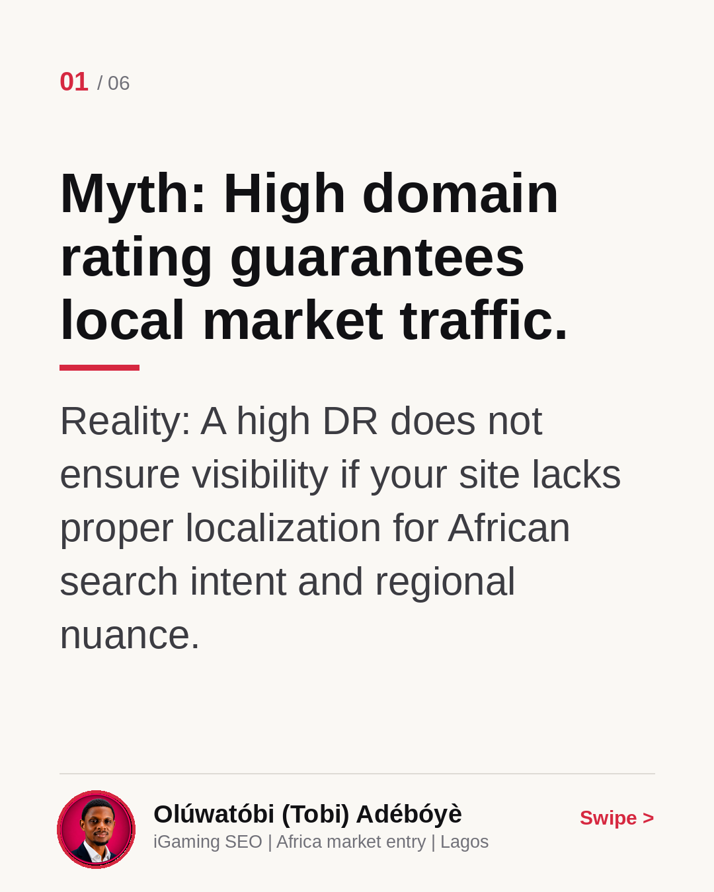
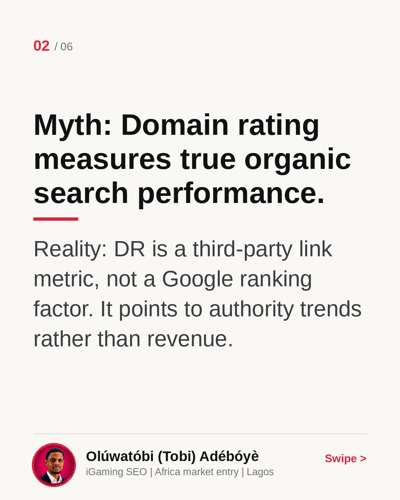
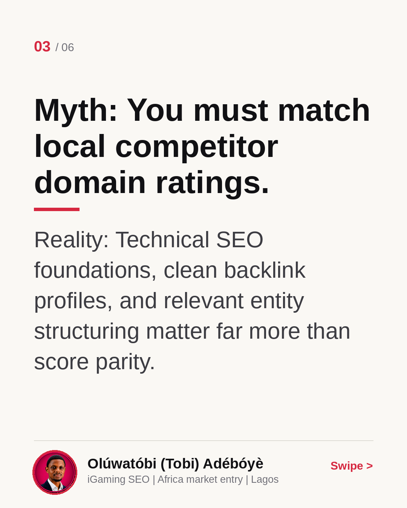
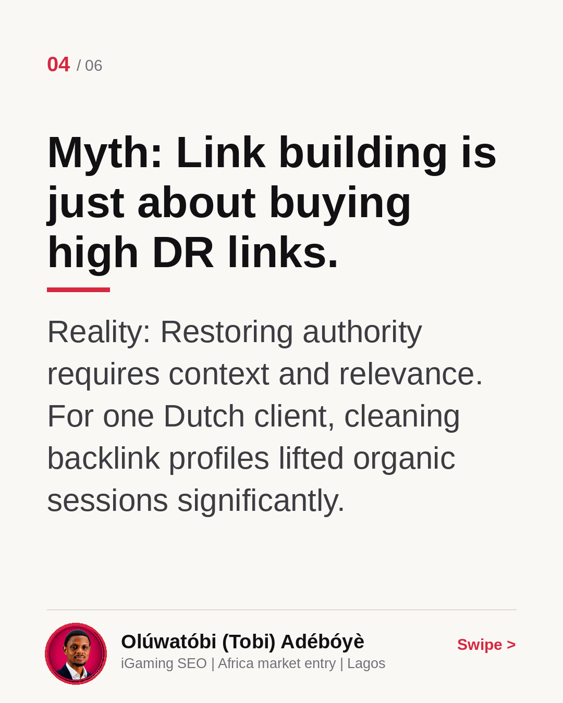
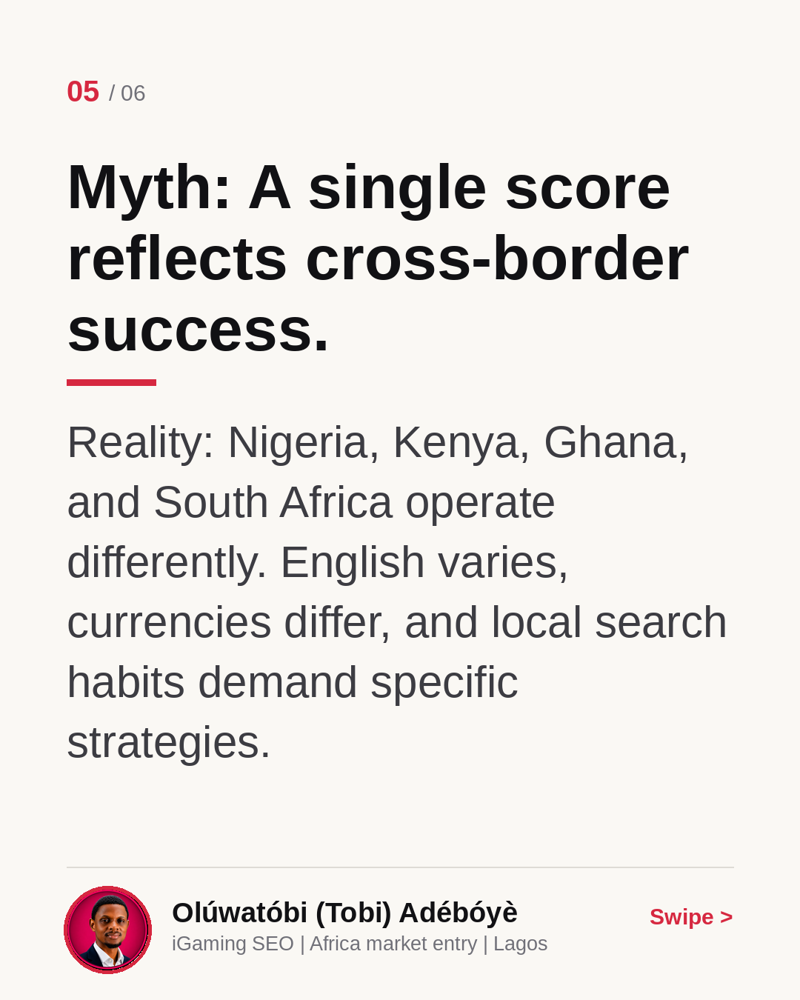
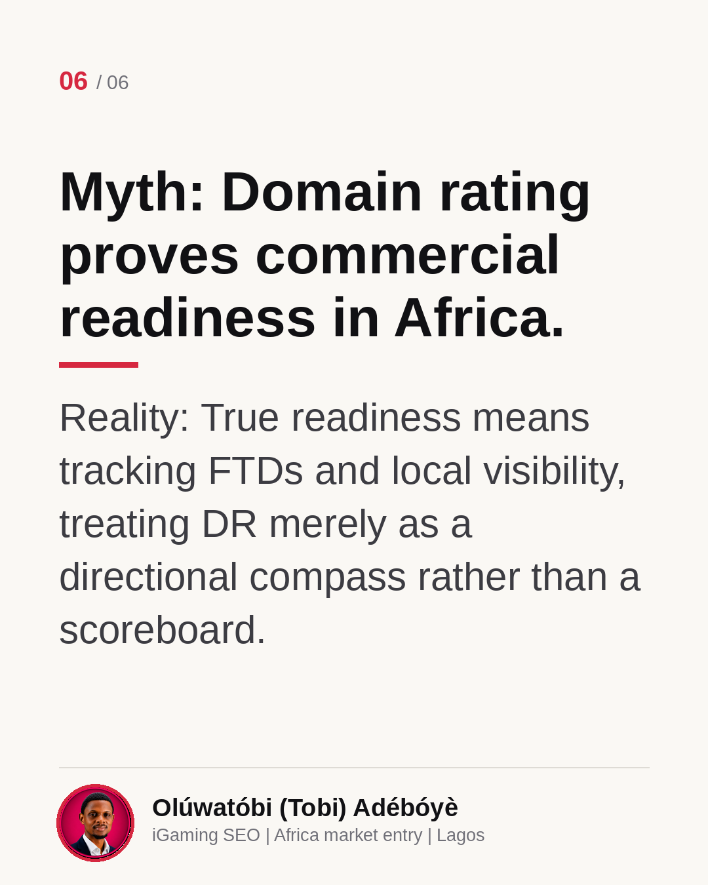

Domain Rating: Compass Or Scoreboard?
European operators often rely on third-party metrics like Domain Rating when evaluating African expansion. But a high score means little if local bettors cannot find your platform. In this carousel, I break down why DR is a compass rather than a scoreboard. Read through the slides and let me know your thoughts in the comments.
Myth: High domain rating guarantees local market traffic.
Reality: A high DR does not ensure visibility if your site lacks proper localization for African search intent and regional nuance.

Myth: Domain rating measures true organic search performance.
Reality: DR is a third-party link metric, not a Google ranking factor. It points to authority trends rather than revenue.

Myth: You must match local competitor domain ratings.
Reality: Technical SEO foundations, clean backlink profiles, and relevant entity structuring matter far more than score parity.

Myth: Link building is just about buying high DR links.
Reality: Restoring authority requires context and relevance. For one Dutch client, cleaning backlink profiles lifted organic sessions significantly.

Myth: A single score reflects cross-border success.
Reality: Nigeria, Kenya, Ghana, and South Africa operate differently. English varies, currencies differ, and local search habits demand specific strategies.

Myth: Domain rating proves commercial readiness in Africa.
Reality: True readiness means tracking FTDs and local visibility, treating DR merely as a directional compass rather than a scoreboard.
